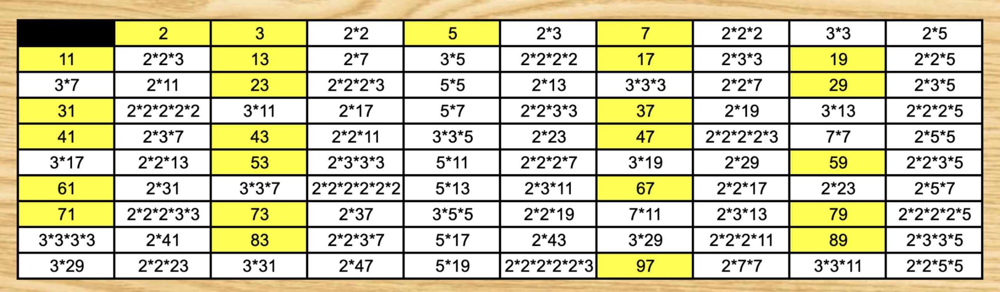
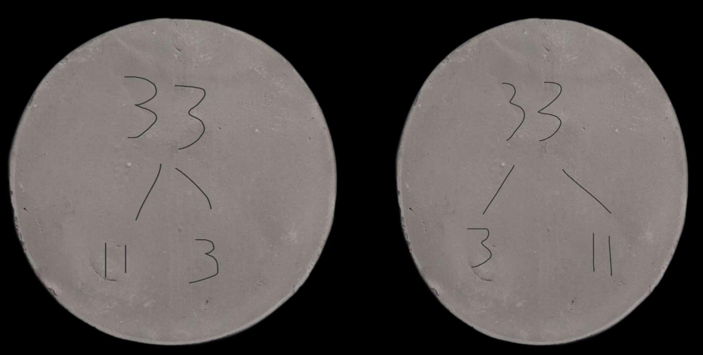
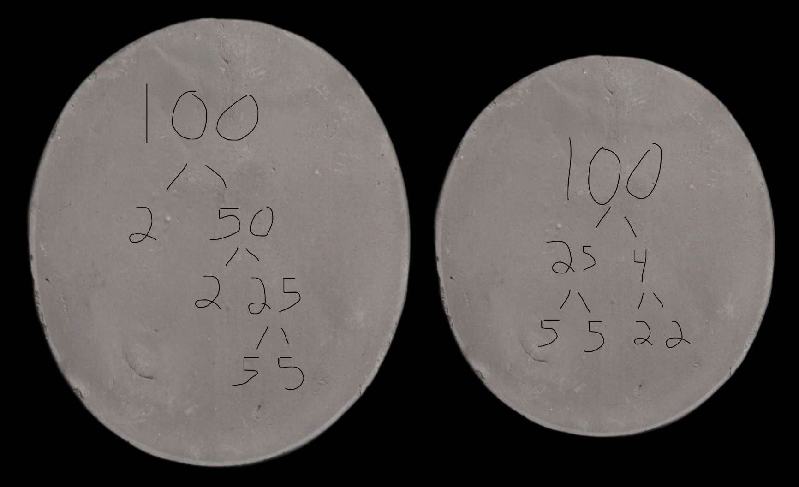
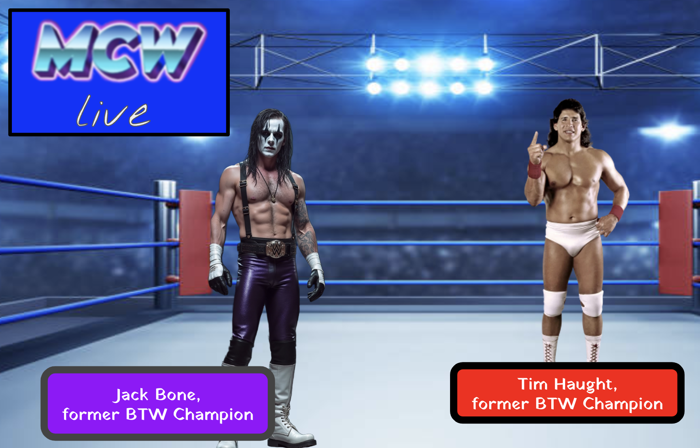
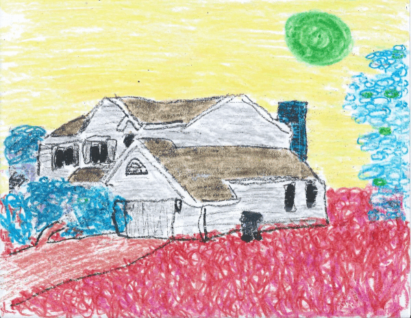
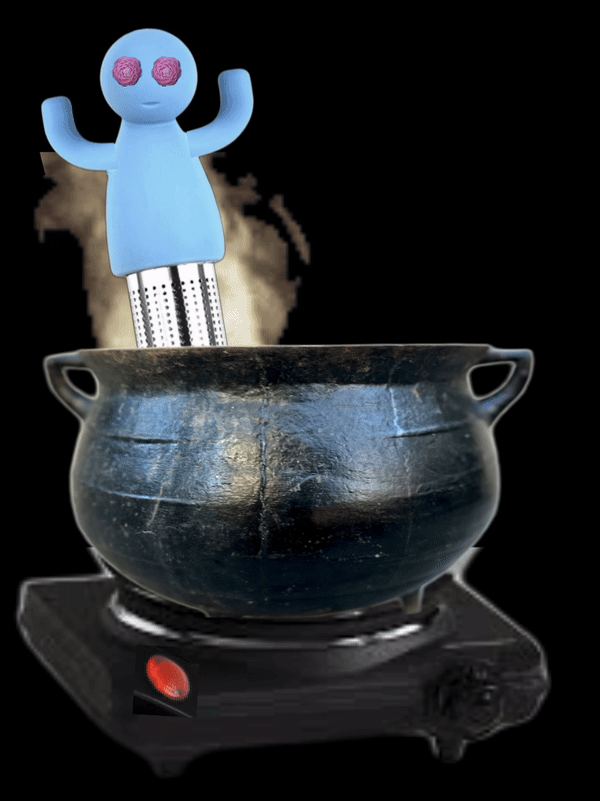
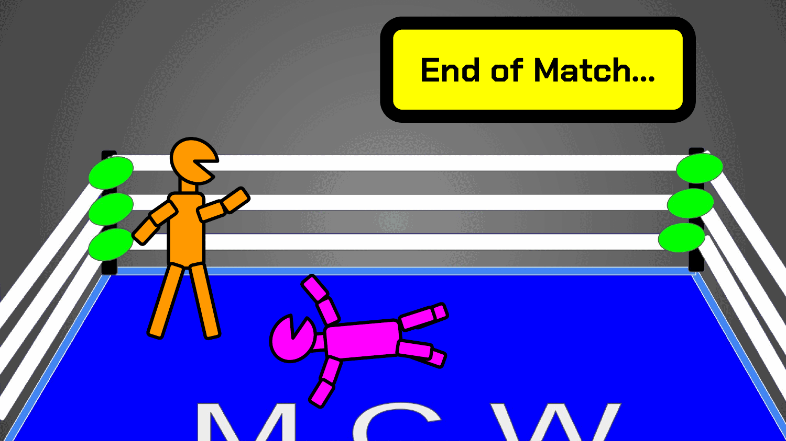

.Uriah Bleu. felt stressed and confused. His rankings at Traveling Mouth Band University (TMB Uni) had suddenly plummeted, apparently in response to a mass influx of new enrollees out in AMABALA. And now Uriah's Triple-A (automatic algorithmic advisor) kept barking out orders to contribute to a myriad of eduProjekts, s'posedly to help him reclaim his ratio of the total EspecialPoint 'conomy.
So, here was Uriah, on bicycle, pedaling from the Xenia library with a wood-carved eduArtifact to install at a makeshift eduShrine behind a random cinderblock wall beside the traintracks.
At the "shrine", he found a cinderblock wall that had been completely papered over by crayon drawings. And a large block of clay.
Uriah thought about arguing with the 'bot, but as he procrastinated the recommended task at hand, he begin to see his rankings drift downward and his EspecialPoint balance stagnate.
So he went over, and began unwrapping the block of clay.
"Wow, that's a lot of prime number isomers," said .Khali Pavlavi., picking up two clay tablets.
"Yeah," Uriah said. "My Triple-A told me to make every prime number isomer up to 100."
"I wondered why it told me to leave all this clay here," Khali said. "I paid for it with my own EspecialPoints."
"Yeah, well, I still don't understand. Prime Number Factor Trees is kid stuff," Uriah said. "This is s'posed to be a gifted skool.
Khali shrugged. "I don't know. They had me do 'em too, except mine were crayon drawings. Very explicit instructions to cover every picometer of paper with crayon. Supreme waxy wonderfulness! Now, if you'll excuse me, I'm off to decorate some bicycles for a big parade."
The next morning, Uriah found himself typing scripts for a ficitious proRasslin' company called Moon Championship Wrestling, an organization devoted to entertaining indentured servants from Antarctica. 
.Uriah. didn't know what he was doing. He had never even watched proRasslin' before. And for the life of him, he could not understand why the Triple-A was having him do such mess.
Then Uriah suddenly received a thought-text from .Hector Chavez..
Before Uriah could respond, his Triple-A emerged in his field of vision.
So when the roboUber arrived, Uriah entered.
Hector's house was a [faeces]hole, with the lawn a meter high, gone to weed, and a cracked concrete driveway covered in motor oil stains. The bushes were overgrown and attempting to eat the front porch, which was a euphemism for «rectangular slab of concrete littered with broken plastic chairs and disembowled rusty bicycles.»
A six-jaar old half-brother of Hector ([redacted]) let Uriah inside, and directed him upstairs.
"Greetings, Uriah Bleu of TEJAS," .Hector. said. "I've prepared some yeshi tea in honour of your presence."
"Ummm," Uriah said. "That's a little blasphemous, don't ya think?"
Hector looked at the boiling cauldron of water atop the electric hotplate and then back at Uriah. He furrowed his brow. "In the EUB (Europa Universal Bevy), this is a long-standing tradition.
"My apologies," Uriah said. "My grandma would flip if she saw this."
"Oh, she must be one of those other yeshians," Hector said, turning off the power switch. "You like this flattop stove? My last one broke, so my Triple-A surprised me by NyleDroning™ me replacement parts, except I had to assemble the electronic circuitry myself. Sautering and wire-stripping and clamping and all that."
"Surprised you?" Uriah said.
"Yeah, I didn't even know it was broke. I wonder if it was some sort of planned obsolescence thing. Or maybe to force me to learn about electricity. I've always sort of ignored those details."
"What's that tea made out of?" .Uriah. asked.
"Dried leaves and flower petals from different plants," Hector said. "It's a medley promoted by an author I read."
Hector used a small ladle to fill shallow hand-sculpted cups, and gave one to Uriah.
"In communion with the great Ground of Being may you be invigorated with the sacred ephermeral breath.
"Ummm, right back at ya," Uriah said.
And they drank.
But Uriah felt a difference in his response to the Triple-A's command. He wasn't annoyed or irritated. He felt proud. He sensed an overwhelming emotion of gratitude to be asked> to be part of this incredible project. He was surprised to feel this sense of cosmic oneness with all of existence.
And under this state, Uriah crafted animations for Hector's proRasslin' projekt.
